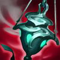
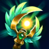
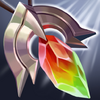
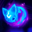

Soporte
/
Maga
Dificultad Baja
HABILIDADES


PASIVA • VIENTO A FAVOR
Janna obtiene de manera pasiva velocidad de movimiento adicional y los campeones aliados cercanos obtienen este efecto al avanzar hacia ella.
1 • VENDAVAL AULLANTE
Al manipular la presión y la temperatura en un punto específico, Janna puede crear una pequeña tormenta que crece con el tiempo. Puede activar el hechizo de nuevo para liberarla. Al hacerlo, la tormenta volará hacia la dirección en la que se lanzó, lo que inflige daño y lanza por el aire a todos los enemigos en su camino.
2 • CÉFIRO
Janna invoca un elemental de aire que aumenta su velocidad de movimiento de forma pasiva. También puede activar esta habilidad para infligir daño y reducir la velocidad de movimiento de un enemigo. El efecto de la pasiva se pierde mientras la habilidad esté en enfriamiento.
3 • OJO DE LA TORMENTA
Janna conjura un vendaval defensivo que escuda a un campeón aliado o a una torre del daño recibido y aumenta su daño de ataque.
DEFINITIVA • MONZÓN
Janna se rodea de una tormenta mágica que aleja a los enemigos. Cuando la tormenta se apacigua, los vientos suaves curan a los aliados cercanos mientras la habilidad esté activa.
CONFIGURACIÓN
OBJETOS
-

Pebetero Ardiente
2800+250 Vida Máxima
+60 Poder de Habilidad
+10 Aceleración de Habilidad
ARDIENTE: +5% de Velocidad de Movimiento.
PEBETERO: Cuando curas o escudas a un campeón aliado, los dos obtienen de un 10% a un 30% de Velocidad de Ataque y tus ataques infligen de 16 a 30 de daño mágico adicional durante 6 seg. Los efectos de regeneración no activan Pebetero. -
Báculo de Agua Fluyente
2500+65 Poder de Habilidad
+350 Maná Máximo
+20 Aceleración de Habilidad
RÁPIDOS: Curar u otorgar un escudo a un aliado te otorga a ti y a este un 20 de Aceleración de Habilidad y 20-40 (según el nivel del objetivo) de Poder de Habilidad durante 4 seg.
-

Eco Armónico
2900+75 Poder de Habilidad
+300 Maná Máximo
+10 Aceleración de Habilidad
ECO ARMÓNICO: Moverte y lanzar habilidades acumula Armonía. Con 100 de Armonía, la siguiente habilidad de curación que lances a un aliado o que le otorgue un escudo restaurará 70 de Vida + 10% de Poder de Habilidad a tu objetivo y hasta a 3 campeones aliados cercanos.
-

Sombrero Mortífero de Rabadon
3500+120 Poder de Habilidad
DAÑO EXCESIVO: Aumenta el Poder de Habilidad en un 40%.
-
Grial Impío de Athene
2500+55 Poder de Habilidad
+40 Resistencia Mágica
+10 Aceleración de Habilidad
PRECIO SANGRIENTO: Almacena un 35% del daño infligido antes de la mitigación a campeones como Sangre, con un límite de 110 a 250. Curar u otorgar un escudo a un aliado consume la Sangre para curarlo por un valor equivalente.
-

Botas Jonias de la Lucidez
1000CALZADO: +40 de Velocidad de Movimiento.
LUCIDEZ: +15 de Aceleración de Habilidad.
INVOCADO: Reduce los enfriamientos de hechizos un 15%.
CARRERA (ACTIVA): Aumenta la Velocidad de Movimiento un 15% durante 3 seg. Infligir o recibir daño de campeones desactiva los efectos de Carrera. (60 seg de enfriamiento). -

Encantamiento de Redención
500REDENCIÓN (ACTIVA): Revela una posición y tras 2.5 seg un rayo de luz cura a los aliados por 25-375 mientras que inflige a los enemigos un 10% de su Vida Máxima como daño verdadero. Los súbditos y monstruos reciben 250 de daño. (60 seg de Enfriamiento).
Se puede usar al estar muerto.
Este efecto se reduce en un 50% si el objetivo se vio afectado por otra redención en los últimos 20 seg.
RUNAS Y HECHIZOS
-

Aery
Tus ataques y habilidades envían a Aery a un objetivo, lo que inflige daño a enemigos o escuda a aliados.
DAÑO: 10 a 60 (basado en nivel) + 20% adicional de Daño de Ataque + 10% de Poder de Habilidad
ESCUDO: 20 a 120 (basado en nivel) + 40% adicional de Daño de Ataque + 20% de Poder de Habilidad
No puedes volver a lanzar Aery hasta que regrese a ti. -
Fragilidad
Reducir el movimiento de campeones enemigos hará que reciban un 5% de daño adicional durante los siguientes 5 seg.
-
Lealtad
Obtienes 2 de Armadura y 5 de Resistencia Mágica. El campeón aliado más cercano a ti obtiene 5 de Armadura y 2 de Resistencia Mágica.
-
Anillo de Flujo de Maná
Alcanzara a un campeón enemigo con una habilidad o ataque potenciado aumenta permanentemente tu Maná Máximo en 30, hasta 300 de Maná.
-

Curación
ENFRIAMIENTO: 120 seg.
Restaura 80 de Vida (80-360 basado en nivel) y otorga un 30% de Velocidad de Movimiento adicional durante 1 seg para ti y para el campeón aliado cercano más herido.
La curación se reduce a la mitad para campeones que hayan recibido un efecto de curación recientemente. -

Destello
ENFRIAMIENTO: 150 seg.
Te teletransportas una distancia corta hacia delante o hacia la dirección objetivo.
CÓMO JUGAR JANNA
Janna es una campeona de apoyo de encantadores. Se destaca por proteger y curar a tus compañeros de equipo para mantenerlos con vida. Ella tiene una fase de carriles bastante fuerte, solo debes tener cuidado y asegurarte de que el carril inferior enemigo no se enfrente a ti porque no tienes mucha salud. Cuanto más tarde el juego, mejor se pone Janna. Sus escudos y curaciones se vuelven aún más fuertes y puedes hacer mucho más para mantener vivo a tu equipo.